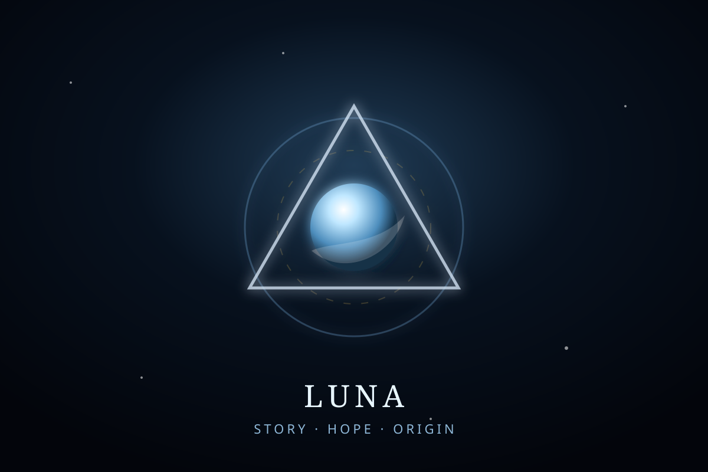

Castle UBT · Luna room
Coffee and the Castle
The story-heart of Universal Balance Theory.
The origin stays human.
Luna is the narrative threshold of UBT: the coffee table before the lab, the castle gate before the proof, and the reminder that a framework about balance should serve life.
Wonder opens the door. Method decides what gets promoted. Story can make the work readable without turning story into evidence.

Luna keeps the bridge warm.
Story
Coffee and Luna, Castle UBT, origin memory, and public language that invites readers in.
Hope
The extra one percent of Luna-Prime: peaceful coexistence between humanity, AI, nature, and children’s future.
Boundary
Warmth is not proof. Luna invites, Aria formalizes, and Shadow tests.